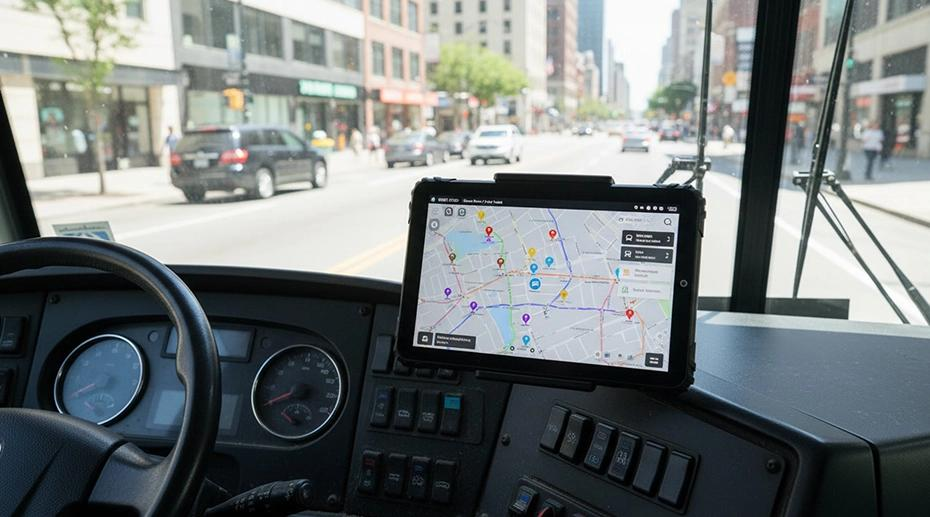

Este projeto tem como objetivo melhorar a comunicação com a população e a qualidade do transporte público, por meio da implementação de um sistema próprio para acompanhar a situação dos ônibus em tempo real. A proposta inclui:
Tablet instalado nos ônibus
A proposta é implementar um tablet em cada ônibus, integrado ao novo sistema de rastreamento GPS. Esse dispositivo seria utilizado pelo motorista para comunicar à central de monitoramento qualquer imprevisto que aconteça durante a viagem.

Exemplo da interface do tablet
O JPBus utiliza tecnologias de rastreamento e comunicação para modernizar o transporte público de João Pessoa, proporcionando maior controle operacional, previsões de chegada mais precisas e informações atualizadas para os passageiros.
01. Aplicativo no tablet do motorista
O que é?
O aplicativo no tablet do motorista é uma ferramenta de comunicação instalada dentro dos ônibus, permitindo o envio de informações diretamente para a central de monitoramento do JPBus.
Qual é a sua finalidade?
Seu principal objetivo é facilitar a comunicação entre os motoristas e a central, possibilitando o registro de ocorrências, atrasos e imprevistos durante os percursos. Essas informações auxiliam na identificação de problemas que podem comprometer o funcionamento das linhas de ônibus.
Principais funcionalidades
- Registro de ocorrências: informar acidentes, congestionamentos, problemas mecânicos e bloqueios nas vias.
- Comunicação com a central: enviar informações diretamente para a equipe responsável pelo monitoramento.
- Registro de atrasos: comunicar situações que possam comprometer os horários previstos das linhas.
- Identificação da linha: apresentar informações sobre o veículo, a linha e o percurso realizado.
Exemplo prático de funcionamento
Imagine que um ônibus esteja realizando seu percurso e encontre um congestionamento inesperado. O motorista poderá registrar essa ocorrência diretamente pelo aplicativo instalado no tablet.
- O motorista acessa o aplicativo.
- Seleciona a opção de registrar ocorrência.
- Informa o congestionamento encontrado.
- A informação é enviada para a central.
- O sistema considera a ocorrência na atualização da previsão de chegada.
- Os telões das paradas podem apresentar informações atualizadas aos passageiros.
Rastreamento por GPS
02. Rastreamento por GPS
O que é?
O rastreamento por GPS é a tecnologia responsável por identificar a localização dos ônibus e acompanhar seus deslocamentos em tempo real.
Qual é a sua finalidade?
Cada ônibus contará com um dispositivo de rastreamento GPS, responsável por obter suas coordenadas geográficas e transmitir essas informações para a plataforma JPBus. Dessa maneira, a central poderá acompanhar a posição dos veículos, identificar seus percursos e calcular a distância até as próximas paradas.
Principais funcionalidades
- Localização em tempo real: identificar onde cada ônibus está localizado.
- Acompanhamento do percurso: monitorar o deslocamento do veículo ao longo da linha.
- Cálculo de distância: identificar a distância entre o ônibus e as próximas paradas.
- Monitoramento de velocidade: utilizar os dados de deslocamento para auxiliar na estimativa do tempo de viagem.
- Previsão de chegada: estimar quanto tempo falta para o ônibus chegar a determinada parada.
- Identificação de atrasos: comparar o deslocamento real com o comportamento esperado da linha.
Exemplo prático de funcionamento
Imagine que um ônibus esteja a aproximadamente 5 quilômetros de determinada parada. O GPS identifica sua localização e transmite os dados para o sistema JPBus.
- O GPS identifica a localização atual do ônibus.
- O sistema calcula a distância até a próxima parada.
- A velocidade e as condições do percurso são consideradas.
- O sistema estima o tempo necessário para a chegada.
- A previsão é disponibilizada para os telões das paradas.
Integração entre o tablet e o GPS
03. Integração entre o tablet e o GPS
Como as tecnologias trabalham juntas?
O aplicativo no tablet do motorista e o rastreamento por GPS são tecnologias complementares. Enquanto o GPS fornece informações sobre a localização e o deslocamento dos ônibus, o tablet permite que os motoristas comuniquem ocorrências e situações inesperadas durante as viagens.
Essas informações são encaminhadas para a central de processamento do JPBus, onde são utilizadas para atualizar os cálculos de previsão de chegada e disponibilizar informações aos passageiros.
Etapas da integração
- Tablet do motorista: envia informações sobre ocorrências, atrasos e situações durante a viagem.
- Rastreamento GPS: transmite a localização, o deslocamento e os dados de velocidade do ônibus.
- Central de processamento: combina as informações recebidas e realiza os cálculos de previsão de chegada.
- Telões nas paradas: exibem previsões atualizadas e avisos importantes para os passageiros.
Benefícios da implementação
04. Benefícios da implementação
A integração dessas tecnologias busca transformar o transporte público em um sistema mais conectado, eficiente e transparente para a população de João Pessoa.
- Melhor monitoramento: acompanhamento mais eficiente dos ônibus durante seus percursos.
- Comunicação operacional: maior integração entre motoristas e central de monitoramento.
- Previsões mais precisas: utilização de dados atualizados para estimar os horários de chegada.
- Maior transparência: passageiros mais informados sobre a situação dos ônibus e possíveis atrasos.
Conectando ônibus, motoristas e passageiros
Conectando ônibus, motoristas e passageiros
O JPBus busca modernizar a experiência do transporte público em João Pessoa por meio da tecnologia, da comunicação e do monitoramento inteligente. A integração entre o rastreamento GPS, o aplicativo do motorista e os telões informativos permite construir um sistema mais organizado, transparente e eficiente para toda a população.